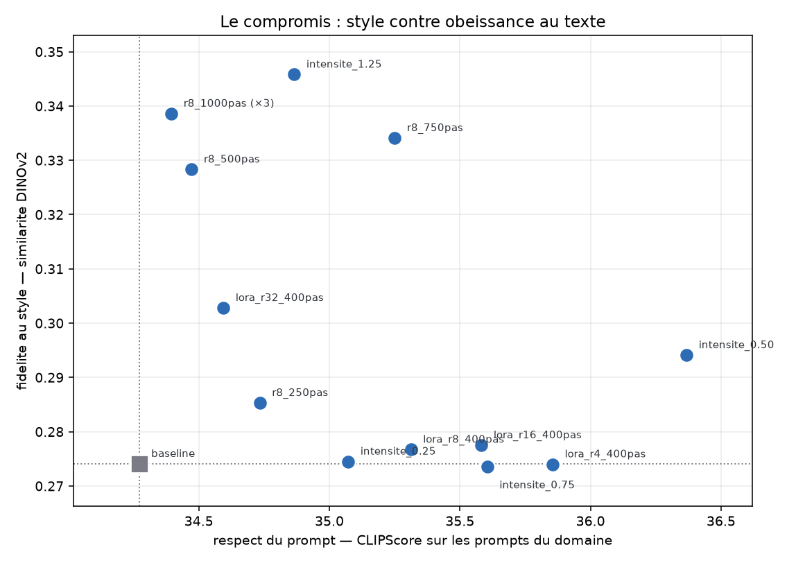
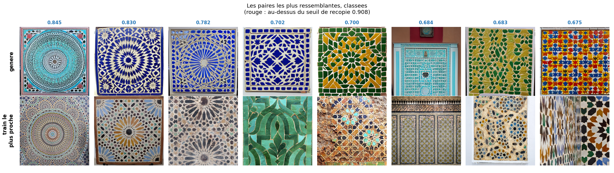

Spécialiser Stable Diffusion sur le zellige marocain par adaptation LoRA
Apprendre un style à partir de 29 photographies et 6 Mo de poids,
puis mesurer ce qui a réellement été appris — y compris ce que cela coûte.
Équipe
Hatim Tajimi · Houssam El Moutaqui · Saad Belekbira
Modèle de base
Stable Diffusion 1.5 · adaptateur LoRA rang 8 · 6,1 Mo
Contrainte
12 Go de VRAM au maximum — exécuté sur Google Colab T4
Dépôt
github.com/HatimTj/lora-zellige-patrimoine
Année
2026 — 2027
Toutes les mesures de ce rapport sont reproductibles à partir du dépôt :
les prompts et les graines ont été figés avant le premier entraînement.
Résumé
Stable Diffusion 1.5 connaît mal le zellige marocain : interrogé sur ce
motif, il produit un carrelage oriental vague, dépourvu de la rigueur
géométrique de l'artisanat. Nous l'avons spécialisé par LoRA, une
adaptation de faible rang qui gèle les 860 millions de paramètres du
générateur et n'en entraîne que 1,59 million, soit 0,19 %. À partir de
29 photographies sous licence libre, l'adaptation améliore la
fidélité au style de +23,5 % (DINOv2) sans dégrader l'obéissance au
texte, pour un fichier de 6,1 Mo et une heure de GPU gratuit. Nous
montrons surtout que le modèle n'a pas recopié ses images : en
établissant le seuil de recopie sur des photographies qu'il n'a jamais vues,
aucune des 28 images d'évaluation ne l'atteint.
1.Contexte et objectif
Les modèles texte-image sont entraînés sur des milliards d'images collectées
sur le web anglophone. Cette provenance crée un déséquilibre : les motifs
largement photographiés et commentés en anglais sont bien représentés, les
patrimoines locaux beaucoup moins. Le zellige — mosaïque de terre cuite
émaillée découpée à la main, assemblée en étoiles à 8, 12 ou 16 branches — en
fait partie. Sollicité sur ce terme, Stable Diffusion 1.5 produit un carrelage
ornemental générique : la palette est plausible, la géométrie ne l'est pas.
L'objectif du projet n'est pas de produire de belles images, mais de formuler
une affirmation vérifiable : de combien un style peut-il être appris à
partir de quelques dizaines d'images, à quel coût, et au prix de quelles
pertes ? Cela suppose de mesurer autant ce qui est gagné que ce qui est abîmé.
Contraintes
20 à 50 images autorisées, légendées, licences tracées ;
12 Go de VRAM au maximum : Google Colab, GPU T4 ;
5 à 10 images réservées pour tester la généralisation ;
dépôt Git tenu comme carnet de bord, sans données ni poids lourds.
2.La méthode : adaptation de faible rang
Réentraîner Stable Diffusion est hors de portée : le générateur d'images, un
U-Net, compte 860 millions de paramètres. Les reprendre tous exigerait des
dizaines de Go de mémoire, produirait un fichier de 1,6 Go par style et, avec
29 images, ferait oublier au modèle tout ce qu'il sait par ailleurs. La
LoRA contourne l'obstacle : les poids d'origine sont gelés, et une correction de
faible rang leur est ajoutée.
Wfinal = Wgelé + B · A
Les matrices A et B sont
très fines : A comprime l'information sur
8 dimensions — le rang — et B la
redéploie. Le pari sous-jacent : un style n'est pas 860 millions
d'informations indépendantes, mais quelques régularités — une palette, une
symétrie, une façon de poser la lumière — qui tiennent dans très peu de
dimensions. Les résultats de la section 5 le confirment.
Tableau 1 — Coût de l'adaptation, mesuré sur Colab T4.
Modèle complet
LoRA rang 8
Paramètres entraînés
859,5 M
1,59 M (0,19 %)
Fichier produit
1,6 Go
6,1 Mo
Mémoire GPU au pic
hors budget
4,66 Go
Durée d'entraînement
—
49 min
Le mot déclencheur
Toutes les légendes d'entraînement commencent par
zlj_style, un mot qui n'existe pas. Le choix est
délibéré. Écrire « zellige » aurait mêlé ce que le modèle croit déjà savoir de
ce mot à ce que nous lui enseignons ; écrire « tiles » aurait dégradé sa
compréhension de ce terme pour tous les autres usages. Un mot vide de sens
offre un point d'accroche propre : le style s'y fixe et nulle part
ailleurs. La section 6 vérifie que cette séparation tient.
3.Le jeu de données
Les images proviennent de Wikimedia Commons, interrogé par son API. Sur
367 candidats téléchargés, 37 ont été retenus, puis répartis en
29 images d'entraînement et 8 images réservées — le holdout,
que le modèle ne voit jamais et qui jouera un rôle central à la section 6.
Licences
Chaque image est tracée dans data/licenses.csv avec
son auteur, sa licence et son URL. Seules CC0, domaine public, CC BY et CC BY-SA
ont été retenues. Les mentions NC (non commercial) et ND (pas de
modification) ont été écartées : entraîner un modèle est une
modification. Le fichier conserve également les 330 images rejetées
avec leur motif de rejet, ce qui rend le tri vérifiable plutôt que
déclaratif.
Le tri automatique ne suffit pas
Un score de pertinence, fondé sur des mots-clés et le format de l'image, a
dégrossi la sélection. Il a néanmoins laissé passer une capture d'écran d'un
logiciel nommé « Zellij » : titre pertinent, format carré, licence libre.
Aucun filtre automatique raisonnable n'attrape ce cas. Dix minutes de relecture
humaine ont été nécessaires, et nous le consignons comme un enseignement du
projet plutôt que comme un détail.
Principe de légendage
Les légendes ne décrivent que ce qui varie : couleurs et composition
(zlj_style, blue and white tilework, eight-pointed star
pattern), jamais le style lui-même. Si toutes les légendes disaient
« mosaïque géométrique », le modèle rattacherait le style à ces mots plutôt
qu'au déclencheur. Ce qui est constant dans les images et absent des
légendes est précisément ce que le token absorbe.
Reproductibilité par reconstruction
Aucune image ni aucun poids n'est versionné. Le dépôt contient à la place de
quoi reconstruire le jeu de données à l'identique en une commande
(licenses.csv, selection.txt,
compositions.csv, metadata.jsonl).
Cette contrainte imposée par le sujet s'est révélée un atout : elle force à
documenter chaque décision de tri.
4.Protocole d'évaluation
C'est la partie qui distingue ce travail d'une simple démonstration. Les
10 prompts et les 4 graines aléatoires ont été figés
avant tout entraînement, et datés dans le dépôt. Une graine fixe le
hasard : même graine, même image. Les figer d'avance interdit de choisir après
coup les résultats qui arrangent. Chaque configuration est jugée sur les
mêmes 40 images.
Les prompts se répartissent en trois familles :
Domaine (4) — du zellige : ce que le modèle doit réussir ;
Transfert (3) — une tasse, un skateboard : le style appliqué à un
objet absent du jeu d'entraînement, pour distinguer un style appris d'une
recopie de panneaux ;
Hors domaine (3) — un chien, des fraises, une rue sous la pluie,
sans déclencheur : ce que l'adaptation a cassé.
Tableau 2 — Quatre questions, quatre mesures indépendantes.
Question
Mesure
Lecture
Le style est-il appris ?
DINOv2, CLIP-I
similarité aux 8 images réservées
Le texte est-il respecté ?
CLIPScore
accord image–phrase
Les images varient-elles ?
LPIPS
distance moyenne entre productions
Le modèle recopie-t-il ?
plus proche voisin
similarité maximale à l'entraînement
Pourquoi pas de FID
Le FID est la métrique usuelle des modèles génératifs, et son absence doit
être justifiée. Il est biaisé en dessous de quelques milliers d'images de
référence ; nous en avons 29. Le publier donnerait un chiffre d'apparence
rigoureuse mais dépourvu de sens. Nous l'écartons et le disons.
DINOv2 plutôt que CLIP-I
Nous avons mesuré le style avec deux encodeurs. Entre la baseline et la LoRA,
CLIP-I progresse de +3,5 % quand DINOv2 progresse de +23,5 %.
L'écart s'explique : CLIP est entraîné à relier images et mots, il perçoit donc
surtout le contenu — « une mosaïque » ; DINOv2 n'a jamais vu de texte et
apprend par comparaison visuelle, il perçoit la texture et la géométrie.
Pour un transfert de style, CLIP-I sature là où DINOv2 discrimine. Nous
retenons DINOv2 comme mesure principale, et cette conclusion repose sur nos
propres mesures, non sur une citation.
5.Résultats
5.1 — L'adaptation fonctionne
Tableau 3 — Modèle d'origine contre LoRA rang 8, 1000 pas, intensité 1,0. Moyennes sur 40 images.
Mesure
Modèle d'origine
LoRA
Écart
Style — DINOv2
0,2741
0,3386
+23,5 %
Style — CLIP-I
0,7061
0,7310
+3,5 %
Prompt — domaine
34,27
34,40
+0,4 %
Prompt — hors domaine
33,14
32,94
−0,6 %
Diversité — LPIPS
0,6464
0,5968
−7,6 %
Mémorisation maximale
0,7373
0,8446
+14,6 %
Le style progresse nettement, l'obéissance au texte ne bouge pas. Le coût est
réel et nous le publions : la diversité recule de 7,6 % et la ressemblance
maximale au jeu d'entraînement augmente. Un modèle qui se concentre sur un
style se répète davantage. La section 6 détermine si cette augmentation traduit
une recopie.

Figure 1 — Le compromis. Chaque point est une
configuration ; les pointillés marquent le modèle d'origine. Les
configurations situées en haut à droite dominent. La forme en arc révèle un
arbitrage limité : on peut gagner beaucoup de style en ne perdant presque rien
en obéissance au texte.
5.2 — Combien de pas d'entraînement ?
Tableau 4 — Balayage du nombre de pas, rang 8, intensité 1,0.
Pas
Style DINOv2
Mémorisation max
Diversité
Durée
250
0,2853
0,7866
0,5990
12 min
500
0,3283
0,8103
0,5880
25 min
750
0,3341
0,8506
0,5917
37 min
1000
0,3386
0,8446
0,5968
49 min
Le style gagne +15 % entre 250 et 500 pas, puis +3 % sur les 500
suivants, tandis que la mémorisation continue de croître. 500 pas
suffisent : au-delà, on échange vingt-quatre minutes de GPU et un risque de
recopie accru contre un gain marginal. Nous avons conservé le modèle à 1000 pas
comme référence, les mesures de l'étape précédente ayant été établies dessus.
5.3 — L'intensité n'est pas un variateur linéaire
L'intérêt d'une LoRA est qu'elle se dose : la correction peut être multipliée
par un facteur à l'inférence. Nous attendions une montée régulière. La mesure
dit autre chose.
Tableau 5 — Balayage de l'intensité, rang 8, 1000 pas.
Intensité
0 (origine)
0,25
0,50
0,75
1,00
1,25
Style DINOv2
0,2741
0,2745
0,2941
0,2735
0,3386
0,3458
Diversité
0,6464
0,6328
0,6157
0,6111
0,5968
0,5719
La réponse est un effet de seuil autour de 1,0, non une droite. En
dessous, la LoRA agit déjà — la diversité décroît de façon strictement
monotone — mais elle modifie la palette et la texture sans imposer la
géométrie. La planche visuelle confirme la mesure : jusqu'à 0,75 le modèle
produit un grand carreau peint, à 1,00 le champ se fragmente en
petites tesselles assemblées — la signature du zellige, qui est un
assemblage de pièces découpées et non un carreau décoré.
Figure 2 — Une seule LoRA, cinq intensités, graine
identique. Ligne D1 : domaine. Ligne T1 : transfert sur une tasse.
Ligne H1 : hors domaine, sans déclencheur. La bascule du carreau peint vers
la mosaïque assemblée se produit entre 0,75 et 1,00, au même endroit que le
saut de la mesure.
Une alerte, et ce qu'elle a produit
La forme en palier de cette courbe nous a d'abord fait soupçonner une panne du
réglage d'intensité. Le balayage a donc été relancé par une autre voie de
l'API (set_adapters au lieu de
cross_attention_kwargs) : il a redonné les mêmes
valeurs au centième. Un test automatique en a été tiré — à l'intensité
0, l'image produite doit reproduire le modèle d'origine au pixel près, sans
quoi le notebook s'interrompt. Le soupçon était infondé, le garde-fou reste.
5.4 — Le rang coûte peu, mais ne décide pas de tout
Tableau 6 — Balayage du rang, à budget d'entraînement identique (400 pas, accumulation 2).
Rang
Paramètres
% du U-Net
Durée
VRAM
Fichier
Style DINOv2
4
797 k
0,09 %
9,5 min
4,65 Go
3,1 Mo
0,2740
8
1,59 M
0,19 %
9,6 min
4,66 Go
6,1 Mo
0,2767
16
3,19 M
0,37 %
9,7 min
4,67 Go
12,2 Mo
0,2775
32
6,38 M
0,74 %
9,6 min
4,70 Go
24,4 Mo
0,3028
Premier résultat, net : le rang ne coûte presque rien. Multiplier les
paramètres par huit ne change ni la durée (9,5 à 9,7 minutes) ni la mémoire
(+0,05 Go). Le calcul est dominé par le U-Net gelé, traversé de toute façon ;
les matrices LoRA sont négligeables à côté. Seul le fichier grossit, en
proportion.
Limite de ce balayage
Son budget — 400 pas × accumulation 2, soit 800 passages — est
inférieur au plus petit point du balayage des pas (250 pas × accumulation 4,
soit 1000 passages). Les quatre rangs sont donc mesurés avant le seuil où
le style apparaît : si les rangs 4, 8 et 16 restent au niveau du modèle
d'origine, c'est faute d'avoir appris, non parce que le rang serait sans
effet. Nous pouvons affirmer qu'à budget égal et court, le rang 32 décolle
le premier — un rang élevé converge plus vite par pas d'optimisation. Nous
ne pouvons pas dire quel rang l'emporte à convergence : il faudrait relancer
les quatre à 1000 pas, soit quarante minutes de GPU supplémentaires.
Le modèle retenu reste donc le rang 8 à 1000 pas (style 0,339 ; 6,1 Mo),
supérieur à toutes les configurations de ce balayage.
6.A-t-il appris, ou recopié ?
Une LoRA entraînée sur 29 images pourrait n'avoir rien appris et se contenter de
restituer ce qu'elle a vu : le score de style monterait tout autant, puisqu'une
copie ressemble nécessairement au jeu d'entraînement. Une mesure séparée est
donc indispensable — et surtout un point de comparaison honnête.
6.1 — Le seuil n'est pas choisi, il est mesuré
Décréter « au-delà de 0,85, c'est une copie » ne serait pas défendable. Nous
faisons donc venir le seuil des données. Les 8 images réservées sont de
vraies photographies de zellige que le modèle n'a jamais vues ; leur
ressemblance maximale au jeu d'entraînement donne la ressemblance normale
entre deux photographies indépendantes du même artisanat. C'est le niveau
de chance de cette question.
Tableau 7 — Similarité DINOv2 au plus proche voisin d'entraînement.
Distribution
min
médiane
moyenne
max
Holdout — 8 photographies jamais vues
0,457
0,733
0,722
0,908
Images produites — 28 prompts zellige
0,123
0,601
0,491
0,845
Aucune image produite n'atteint le seuil de 0,908. Le résultat est même
plus fort : la distribution produite est globalement plus basse que celle
du holdout — médiane 0,601 contre 0,733. Une image engendrée par le modèle
ressemble moins au jeu d'entraînement qu'une vraie photographie de
zellige inconnue de lui.
Par honnêteté, nous donnons aussi la lecture sévère : un maximum sur huit
échantillons est une barre permissive. En prenant la moyenne du holdout
(0,722), 3 images sur 28 dépassent, soit 10,7 %. Ce sont les trois
premières de la figure 4, et c'est là que le regard prend le relais.
Figure 3 — Jusqu'où ressembler sans copier. En haut les
8 photographies jamais vues, en bas les 28 images produites. Les deux nuages
se recouvrent, et le second est décalé vers la gauche.
6.2 — Ce que l'œil ajoute au chiffre

Figure 4 — Les huit paires les plus ressemblantes. En haut
l'image produite, en dessous son plus proche voisin d'entraînement, classées
par similarité décroissante.
Les trois paires les plus proches (0,845 · 0,830 · 0,782) partagent avec leur
voisin la composition — une rosace centrale, un éclatement en étoile —
mais ni la palette, ni le nombre de branches, ni le détail des tesselles. Une
recopie se reconnaîtrait au contraire aux défauts du carreau et à la découpe
exacte ; il n'y en a aucune.
Ce constat est cohérent avec la nature même de l'objet : la géométrie islamique
repose sur un répertoire fini de symétries. Deux zelliges authentiques et
sans rapport se ressemblent déjà beaucoup, ce que le holdout établit chiffres à
l'appui — jusqu'à 0,908 entre deux photographies indépendantes. Le score élevé
mesure ce répertoire commun, non une mémorisation.
6.3 — Le modèle sait-il encore faire autre chose ?
Sur les trois prompts hors domaine, et sans déclencheur, le CLIPScore
passe de 33,14 à 32,94, soit −0,20. Le chien court, les fraises sont des
fraises, la rue sous la pluie est une rue sous la pluie : aucune trace de
carrelage. Le pire écart individuel, −2,45 sur les fraises, correspond à un
recadrage et non à une dégradation du contenu.
Figure 5 — Prompts hors domaine. Modèle d'origine en haut,
LoRA en dessous, même graine. Pour chaque prompt est montré le cas le
plus défavorable à la LoRA, non le plus flatteur.
Le pari du mot déclencheur est donc tenu : le style reste attaché à
zlj_style au lieu de déborder sur l'ensemble des
prompts. C'est la justification empirique d'un choix fait à l'étape 0, avant
tout résultat.
7.Démonstration
L'application demo/app.py (Gradio) affiche côte à côte
le modèle d'origine et le modèle adapté, pour un même prompt et une même graine,
avec un curseur d'intensité et un interrupteur sur le déclencheur.
Elle présente une particularité : elle s'audite elle-même. Chaque image
produite est comparée aux 29 images d'entraînement, et le résultat est placé en
direct sur l'échelle établie à la section 6 — médiane du holdout et seuil de
recopie — avec l'image d'entraînement la plus proche affichée à côté. Montrer un
modèle génératif sans dire s'il recopie nous paraissait incomplet.
Deux économies découlent des mesures antérieures : l'intensité 0 reproduisant le
modèle d'origine au pixel près, un seul pipeline alimente les deux
colonnes — 1,6 Go de VRAM épargnés — et l'image d'origine étant mise en cache,
déplacer le curseur ne recalcule que la colonne de droite.
8.Limites, éthique et coût
Limites méthodologiques
Le seuil repose sur 8 images. C'est peu, et nous le signalons
plutôt que de le taire. La même rareté de données interdit le FID.
Le balayage du rang est sous-entraîné (section 5.4) : il ne permet
pas de conclure sur le meilleur rang à convergence.
29 photographies ne représentent qu'une fraction du répertoire du
zellige — dominante bleu et blanc, panneaux plutôt que fontaines. Le
modèle en imite une facette, il ne le documente pas.
Patrimoine et appropriation
Le zellige est un savoir-faire vivant, transmis par des maalems. Un
modèle qui en imite la surface ne reproduit ni la géométrie sous-jacente exacte,
ni les contraintes du matériau et de la découpe. Ce projet est un outil
d'exploration visuelle et de sensibilisation ; il ne se substitue pas au travail
artisanal et les images produites ne sont pas des relevés fidèles de panneaux
existants.
Licences et transparence
Aucune image sans licence identifiée n'a été employée ; aucune œuvre d'artiste
vivant nommé n'a été incluse. Le modèle de base, les données, les graines et les
prompts sont publiés, de sorte que chaque chiffre de ce rapport peut être
recalculé.
Empreinte de calcul
L'ensemble du projet représente environ 2 h 24 de GPU T4 : 88 minutes
d'entraînement cumulées sur cinq configurations et 56 minutes de génération pour
les quinze configurations évaluées. C'est l'un des arguments de la LoRA, et il
mérite d'être chiffré plutôt qu'affirmé.
9.Conclusion
À partir de 29 photographies sous licence libre et de 6,1 Mo de poids
entraînés — 0,19 % du générateur — Stable Diffusion 1.5 apprend le style du
zellige : +23,5 % de fidélité mesurée sur DINOv2, sans perte
d'obéissance au texte, pour une heure de GPU gratuit. Le coût est mesuré et
publié : −7,6 % de diversité. Et le modèle n'a pas recopié :
confronté à un seuil établi sur des photographies qu'il n'a jamais vues, aucune
des 28 images d'évaluation ne l'atteint.
Au-delà du résultat, le projet aura surtout consisté à construire les conditions
dans lesquelles une affirmation devient vérifiable : figer les prompts et les
graines avant d'entraîner, choisir les métriques avant de voir les résultats,
faire venir les seuils des données plutôt que de l'intuition, et publier ce qui
se dégrade autant que ce qui s'améliore.
Reproduire ces résultats
git clone github.com/HatimTj/lora-zellige-patrimoine
Les notebooks 01 à 07 reconstruisent le jeu de données, entraînent, évaluent
et lancent la démonstration. Les images et les poids ne sont pas versionnés :
le dépôt contient de quoi les régénérer à l'identique.
Répartition du travail
Tableau 8 — Répartition présentée à la soutenance ; chaque membre répond sur l'ensemble du projet.
Membre
Responsabilité principale
Hatim Tajimi
Cadrage, collecte et licences, légendage, dépôt et intégration
Houssam El Moutaqui
Entraînement LoRA, balayages rang et pas, analyse du surapprentissage
Saad Belekbira
Métriques et protocole, figures et tableaux, démonstration Gradio
Projet 5 — IA générative visuelle · EMSI, 5e année · 2026-2027 ·
github.com/HatimTj/lora-zellige-patrimoine